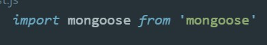
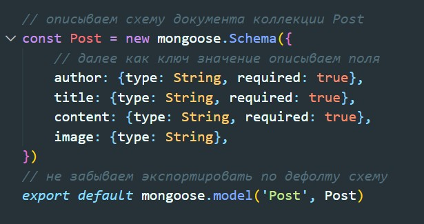
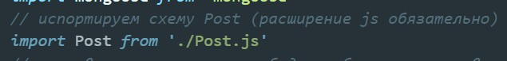
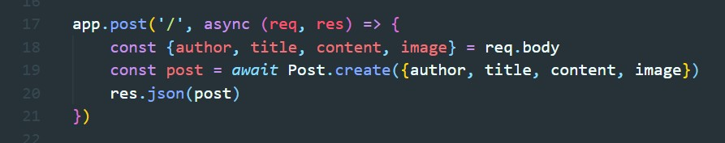
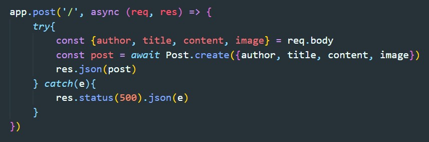

Создадим в корне проекта файл и назовем его Post.js
В этом файле нам нужно импортировать mongoose
Далее с помощью mongoose.Schema описываем состав документа коллекции
Возвращаемся в index.js и первое что бы делаем - это импортируем нашу схему
Далее создаем endpoint с методом post
Endpoint принимает ассинхронную функцию, которая принимает request. С помощью диструктуризации получаем обязательные поля нашей схемы (стр 18) и обращаемся к нашей схеме Post и вызываем метод create (стр 19) куда передаем объект с нашими полями. В результате обращаемся к response и вызывавем метод json. Этот метод что то вернет на клиент в формате JSON, например вернем наш только что созданный документ коллекции.
После выполненного запроса, можно зайти на mongo и увидеть новую коллекцию Post и там только что созданную запись
Сейчас если мы передадим в body недостаточное количество полей, то наше приложение упадет. Что бы это избежать обернем наш код в try catch
